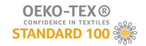
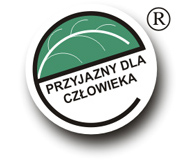
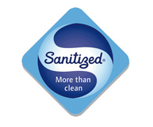

<div class="panel_certyfikaty">
    
    <p class="text_certyfikaty">
        Oeko-Tex standard 100 to certyfikat świadczący o jakości produktów tekstylnych i włókienniczych, które mają bezpośrednią styczność ze skórą człowieka. Organizacja Oeko-Tex przydziela certyfikat produktom, na których zostały przeprowadzane badania mające na celu zweryfikować obecność 100 najbardziej niebezpiecznych substancji zagrażających konsumentom.
        <br/><br/>
        Dzięki badaniom przeprowadzonych w laboratoriach na całym świecie certyfikowane produkty są wolne od środków wpływających niekorzystnie na zdrowie ludzi (m.in. formaldehydów, pestycydów czy substancji, które mogą być przyczyną wywoływania alergii). Ocenie podlegają również takie czynniki jak zapachy obce czy odporność na pot i ślinę. Etykiety standardu najwyższej jakości Oeko-Tex można zauważyć m.in. na pościelach, kołdrach, poduszkach oraz bieliźnie pościelowej i dziecięcej. 
    </p>   
    

</div>

<!--
<br/>

<div class="panel_certyfikaty_02">
    
    <p class="text_certyfikaty">
       Oznaczanie tym znakiem potwierdza właściwości humanoekologiczne wyrobów włókienniczych i zapewnia, że proces ich wytwarzania jest zgodny z obowiązującymi przepisami prawnym w zakresie normatywów higienicznych dla środowiska pracy. Znakiem tym mogą być oznaczone wyroby, które uzyskały certyfikat.
  
    </p>   
    

</div>

<br/>

<div class="panel_certyfikaty_02">
    
    <p class="text_certyfikaty">
        SANITIZED AG to wiodąca na świecie szwajcarska firma w dziedzinie środków przeciwdrobnoustrojowych
        funkcja higieniczna i ochrona materiałów tekstyliów i syntetyków oraz
        gwarant we wszystkich kwestiach związanych z bezpieczeństwem i ekologią w stosowaniu produktów przeciwdrobnoustrojowych.
    </p>   
    

</div>
-->